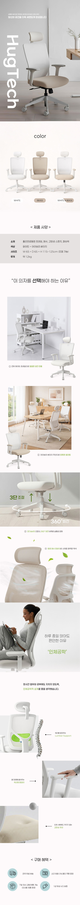

기획부터 비주얼까지 직접 기획한 의자 상세페이지
product detail
Design Point
- 1 프로젝트 개요 및 기획 의도
- 사용자를 포근하게 안아주는 ‘HugTech’의 브랜드 철학을 시각화하는 데 집중한 상세페이지 프로젝트입니다. 단순한 기능 나열을 넘어, 1인 가구의 일상 속 정서적 안정감과 최상의 휴식을 제공하는 제품의 본질적인 가치를 전달하고자 기획되었습니다.
- 2 AI 협업을 통한 효율적 비주얼 구현
- AI 어시스턴스와 디자인 툴의 유기적인 결합으로 기획 의도에 최적화된 고품질 라이프스타일 이미지를 구현했습니다. 기술적 협업을 통해 제작 효율을 극대화했으며, 브랜드 톤에 맞는 일관된 비주얼 스토리텔링으로 상세페이지의 몰입감을 높였습니다.
- 3 디자인 디테일 및 톤앤매너
- 화이트와 베이지 톤의 차분한 컬러 팔레트를 활용하여 브랜드가 지향하는 정제된 미학을 표현했습니다. 시선의 흐름을 고려한 직관적인 레이아웃과 절제된 타이포그래피를 적용하여, 정보의 가독성과 시각적 완성도를 동시에 확보한 사용자 중심의 디자인입니다.

